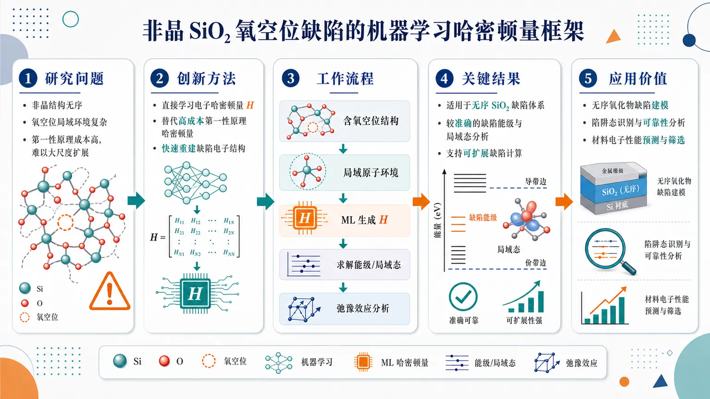
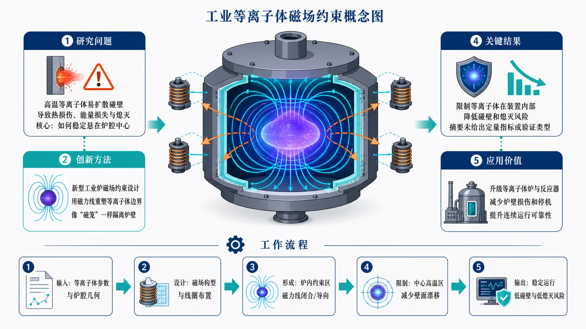
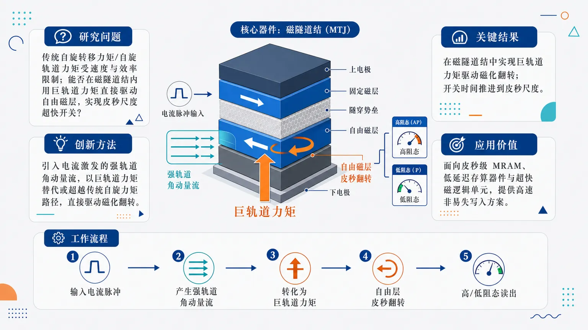

AI × Science 文献日报 2026/07/12
聚焦 AI × 物理 / 化学 / 材料交叉方向，自动过滤明显偏题的医学、教育与社会科学内容，并按主题重新排版，便于快速深读。
AI | 物理 | 化学 | 材料 | 交叉学科
核心关注（ML × ferro / 凝聚态）
2 篇今日进展把 ML 从 NbOI2、BaTiO3 中常见的 MACE/NEP 势能面与相变采样，推进到非晶 SiO2 氧空位的机器学习哈密顿量，直接处理缺陷电子结构。相较 CrI3、CrSBr 中依赖 DFT+U 参数化自旋模型的做法，ML Hamiltonian 更接近能级、局域态与电荷俘获本身。磁隧道结的巨轨道力矩皮秒翻转则把凝聚态器件目标推向超快非平衡动力学，可与 equivariant GNN、主动学习和自旋-轨道输运描述耦合。
-
01机器学习哈密顿量用于非晶 SiO2 缺陷计算Machine learning Hamiltonian enables scalable and accurate defect calculations: the case of oxygen vacancies in amorphous SiO 2
📄 摘要：面向非晶 SiO2 中氧空位缺陷，构建可扩展且保持第一性原理精度的机器学习哈密顿量，用于大尺度无序体系缺陷电子结构计算。题录未给出误差、超胞规模或能级位置等定量数值。
💡 亮点：机器学习哈密顿量被用于非晶 SiO2 氧空位这一典型无序绝缘体缺陷问题。亮点在于把高精度电子结构计算扩展到更大非晶模型，有助于缺陷物理与可靠性研究。
📐 方法要点：以第一性原理数据训练ML哈密顿量，预测非晶SiO2氧空位电子结构
🔗 相关工作关联：呼应MACE/NEP/equivariant GNN势能面、深度紧束缚、缺陷能级计算
💡 对你方向的启示：缺陷ML应从能量和结构扩展到哈密顿量，重点验证局域态、带隙与电荷俘获
-
02磁隧道结中巨轨道力矩皮秒翻转Giant orbital torque-driven picosecond switching in magnetic tunnel junctions
📄 摘要：围绕磁隧道结，报道由巨轨道力矩驱动的皮秒尺度磁化翻转，目标是突破传统自旋轨道力矩写入速度与能耗限制。摘要未列出层结构、脉冲宽度、临界电流密度或隧穿磁阻数值。
💡 亮点：磁隧道结中利用轨道力矩实现皮秒磁化翻转，直接指向超快磁存储写入。若全文证实较低写入阈值，该机制将强化轨道电子学在自旋器件中的地位。
📐 方法要点：利用巨轨道力矩在磁隧道结中驱动皮秒尺度磁化翻转
🔗 相关工作关联：呼应自旋轨道力矩MRAM、轨道霍尔效应、CrI3/CrSBr自旋动力学
💡 对你方向的启示：可用ML反演层结构、轨道流与翻转窗口，加速MTJ材料组合和脉冲参数设计
今日摘要
总览：今日 7 篇覆盖机器学习势/哈密顿量、缺陷与溶质热力学、自旋器件、等离子体与波动模拟方法。代表性工作包括用机器学习哈密顿量处理非晶 SiO2 氧空位、用 SCAN 系列机器学习势预测液态钠中氧溶解焓，以及磁隧道结中的轨道力矩皮秒翻转。
热点：计算材料方向继续从“拟合能量与力”的机器学习势扩展到哈密顿量、缺陷能级与自旋哈密顿量等电子结构量。自旋电子学热点集中在轨道角动量输运及其对磁隧道结快速写入的作用。连续介质与等离子体方向强调非经典输运、有限传播速度、旋转波放大等可实验模拟现象。多篇条目摘要信息有限，定量误差、器件尺寸和实验参数需以正式全文为准。
今日文献
7 篇 · 3 含图深析-
01
📊 含图深析
📄 摘要：面向非晶 SiO2 中氧空位缺陷，构建可扩展且保持第一性原理精度的机器学习哈密顿量，用于大尺度无序体系缺陷电子结构计算。题录未给出误差、超胞规模或能级位置等定量数值。
💡 亮点：机器学习哈密顿量被用于非晶 SiO2 氧空位这一典型无序绝缘体缺陷问题。亮点在于把高精度电子结构计算扩展到更大非晶模型，有助于缺陷物理与可靠性研究。
📖 展开分析 + 配图

研究问题非晶 SiO₂ 中氧空位缺陷的电子结构计算成本高、体系无序且局域环境复杂，传统第一性原理方法难以在大尺度模型和大量缺陷构型上同时保持精度与可扩展性。创新方法构建机器学习哈密顿量来直接替代高成本第一性原理电子哈密顿量，用于描述非晶 SiO₂ 氧空位附近的局域缺陷态、能级分布和结构弛豫效应；核心 Aha 点是从“预测能量/力”提升到“学习电子哈密顿量”，使缺陷电子结构可被快速重建。工作流程输入含氧空位的非晶 SiO₂ 原子结构与局域原子环境，经机器学习模型生成近似哈密顿量，再求解电子能级与局域缺陷态，并结合缺陷结构弛豫分析，最终输出氧空位相关的电子态、缺陷能级和可扩展缺陷计算结果。关键结果机器学习哈密顿量被成功应用于非晶 SiO₂ 氧空位这一典型无序氧化物缺陷体系，支持较准确且可扩展的缺陷电子结构分析，可用于研究局域缺陷态、结构弛豫和能级特征；具体误差、体系尺寸和加速倍数摘要未给出。应用价值该研究为无序氧化物、绝缘材料和半导体介质中的缺陷建模提供高效工具，可降低大规模缺陷筛选、可靠性分析、陷阱态识别和材料电子性能预测的计算门槛。核心概览
该论文构建机器学习哈密顿量，用于非晶 SiO₂ 中氧空位缺陷的可扩展、较准确电子结构计算，属机器学习辅助材料缺陷计算方向。
方法要点
- 以机器学习哈密顿量替代高成本第一性原理电子结构计算。
- 研究对象为非晶 SiO₂ 中的氧空位缺陷。
- 目标应用包括无序氧化物中的局域缺陷态分析。
- 方法涉及缺陷相关结构弛豫与能级分析，但具体流程摘要未详述。
- 训练数据来源、模型形式、特征构造、损失函数和验证方案摘要未详述。
关键结果
- 摘要明确指出该方法面向“可扩展”和“准确”的缺陷计算。
- 该机器学习哈密顿量被用于非晶 SiO₂ 氧空位这一典型无序氧化物缺陷问题。
- 论文声称该方法可支持局域缺陷态、结构弛豫及相关能级分析。
- 误差水平、可处理体系尺寸、采样数量、与第一性原理对比结果等摘要未详述。
创新性判断
- 可能的新颖点在于：将机器学习哈密顿量用于非晶 SiO₂ 中氧空位缺陷的电子结构与能级计算，而不仅是常规能量/力预测；这一点相对传统机器学习势函数更偏向电子哈密顿量层面的替代。
- 另一可能创新在于：面向非晶无序体系中的局域缺陷态进行可扩展计算，这类问题通常比晶体缺陷更依赖大尺度采样与局域环境描述。
- 其创新性强弱仍不确定，因为摘要未详述模型架构、训练策略、基准对比、精度指标及与已有机器学习电子结构方法的差异。
-
02
📊 含图深析
📄 摘要：新闻条目介绍一种面向高温工业等离子体约束的新磁场设计，核心问题是在装置内限制类恒星高温等离子体，避免接触壁面并维持稳定运行。未给出磁场拓扑、温度、约束时间或能效数值。
💡 亮点：该条目聚焦工业等离子体炉的磁约束几何设计，而非材料本身。其凝聚态相关性主要在高温等离子体处理、材料合成和极端环境制造平台。
📖 展开分析 + 配图

研究问题高温工业等离子体在炉体或反应装置中容易扩散并触碰壁面，导致壁面热损伤、能量损失和等离子体熄灭；核心问题是如何用磁场把“炽热等离子体云”稳定悬在装置中心，减少与金属炉壁接触。创新方法提出面向工业炉/反应装置的新型磁场约束设计，用磁力线重新塑造等离子体边界，使高温等离子体像被“磁笼”包围一样远离壁面；Aha 点在于把磁约束从聚变场景转向工业等离子体炉，强调运行持续性和抗熄灭能力。工作流程输入为工业装置中的高温等离子体与炉腔几何需求；设计并布置新的磁场构型；磁力线在炉腔内形成约束区域；等离子体被限制在中心高温区，减少向壁面漂移；输出为更稳定、更少壁面接触、更低熄灭风险的工业等离子体运行状态。关键结果论文摘要表明，新磁场设计能够在装置内部限制等离子体，并降低等离子体碰壁和熄灭风险；但未提供约束时间、热负荷降低、功率提升、稳定性阈值等定量指标，也未明确是实验验证、模拟验证还是概念设计。应用价值可用于升级工业等离子体炉、反应器和高温加工系统，减少炉壁损伤与停机风险，提高连续运行可靠性；视觉上可表现为更耐久的炉体、更稳定的蓝紫色等离子体核心和更高效的工业热处理/材料加工流程。核心概览
这是一篇偏新闻/科普性质的工业等离子体工程条目，介绍一种新的磁场设计，旨在提升高温工业等离子体的稳定性与约束效率。
方法要点
- 研究聚焦于高温工业等离子体的磁约束问题，即避免等离子体接触装置壁面或快速能量损耗。
- 核心技术是采用一种新的磁场设计来改善等离子体约束。
- 该设计的目标包括提高等离子体稳定性和约束效率。
- 摘要未详述磁构型名称、磁场强度、装置几何尺度、运行温度、诊断方法或实验/模拟流程。
关键结果
- 摘要明确指出，新磁场设计有望提升高温等离子体工程中的稳定性。
- 摘要明确指出，该设计旨在提高等离子体约束效率。
- 该工作针对工业等离子体中的壁面接触和快速损耗问题。
- 摘要未详述定量结果，例如约束时间提升幅度、能量增益、温度范围或实际工业效率提升。
创新性判断
- 可能的新颖点在于提出或报道了一种面向工业高温等离子体应用的新磁场构型或磁约束设计，但具体形式摘要未详述。
- 相对传统工业等离子体或聚变类磁约束思路，其潜在创新可能是将更强稳定性、更高约束效率作为工程化目标进行磁场重构；这一判断基于摘要措辞，存在不确定性。
- 由于摘要没有给出对比对象、实验数据或理论模型，无法判断其相对现有磁镜、托卡马克、仿星器或其他磁约束方案的实质性突破程度。
-
03
📊 含图深析
📄 摘要：围绕磁隧道结，报道由巨轨道力矩驱动的皮秒尺度磁化翻转，目标是突破传统自旋轨道力矩写入速度与能耗限制。摘要未列出层结构、脉冲宽度、临界电流密度或隧穿磁阻数值。
💡 亮点：磁隧道结中利用轨道力矩实现皮秒磁化翻转，直接指向超快磁存储写入。若全文证实较低写入阈值，该机制将强化轨道电子学在自旋器件中的地位。
📖 展开分析 + 配图

研究问题磁隧道结中的磁化翻转通常受限于传统自旋转移力矩或自旋轨道力矩的速度与效率；核心问题是：能否用“巨轨道力矩”在磁隧道结内直接驱动自由磁层，实现皮秒尺度的超快磁化开关。创新方法将巨轨道力矩引入磁隧道结开关机制：利用电流激发的强轨道角动量流，对磁层施加瞬时巨大力矩，替代或超越传统自旋力矩路径，形成“轨道力矩驱动的超快翻转”这一 Aha 点。工作流程输入电流脉冲进入磁隧道结器件；脉冲在功能层中产生强轨道角动量流；轨道角动量转化为作用在磁性自由层上的巨轨道力矩；自由层磁化方向在皮秒时间窗内快速翻转；最终通过磁隧道结的高/低阻态读出开关结果。关键结果论文核心结果是在磁隧道结中实现了巨轨道力矩驱动的磁化翻转，并将开关时间推进到皮秒尺度；这表明轨道力矩可作为磁隧道结超快写入的有效驱动力。应用价值该研究为高速非易失磁存储器和自旋逻辑器件提供新的写入方案：以轨道力矩实现更快的磁化控制，有望推动皮秒级 MRAM、低延迟存算器件和超快磁逻辑单元的发展。核心概览
该论文聚焦自旋电子学中磁隧道结的皮秒磁化翻转，强调由“巨轨道力矩”驱动，而非传统自旋力矩机制。
方法要点
- 研究对象为磁隧道结（MTJ）器件中的磁化翻转过程。
- 核心物理机制是轨道力矩（orbital torque）驱动。
- 工作关注皮秒量级的超快开关行为。
- 摘要暗示其与传统自旋转移力矩（STT）或自旋轨道力矩（SOT）路径不同。
- 具体层结构、材料体系、脉冲参数、测量方法或模拟方法摘要未详述。
关键结果
- 论文声称实现或研究了磁隧道结中的“巨轨道力矩驱动”磁化翻转。
- 目标或实现的翻转时间尺度为皮秒量级。
- 摘要强调该机制可能提供区别于传统 STT/SOT 的快速翻转路径。
- 临界电流密度、脉冲宽度、隧穿磁阻、翻转概率等定量结果摘要未详述。
创新性判断
- 可能的新颖点在于将“轨道力矩”作为磁隧道结超快翻转的主导驱动力，而不是仅依赖传统自旋转移力矩或自旋轨道力矩。
- 若论文确实证明“巨轨道力矩”可实现皮秒级 MTJ 开关，则其创新性主要体现在新型力矩机制与超快存储器件应用的结合。
- 由于摘要未给出材料设计、器件结构和对照实验，无法确定其创新来自材料体系、器件架构、测量技术还是理论机制。
- “giant orbital torque”的定量强度及其相对已有轨道力矩工作的提升幅度，摘要未详述，因此创新幅度仍需全文验证。
-
04
📄 摘要：针对液态钠中氧的溶解焓，采用 SCAN 系列交换关联泛函训练的机器学习势进行预测，服务于液态金属冷却剂中轻元素杂质热力学计算。题录未给出溶解焓数值、温区或与实验偏差。
💡 亮点：SCAN 系列机器学习势被用于液态钠—氧体系的溶解热力学，连接第一性原理精度与液态金属采样。该方向对反应堆冷却剂杂质控制和液体合金模拟很具体。
-
05
📄 摘要：新闻条目描述用合成旋转模拟彭罗斯黑洞能量提取与泽尔多维奇波放大：波与足够快的旋转对象相互作用时可从旋转中取能并被放大。摘要未说明平台类型、旋转频率、增益或波段。
💡 亮点：合成旋转把黑洞能量提取类比带入实验室波系统，目标是观测旋转诱导的波放大。该现象与拓扑声学、光子晶体和非厄米波动体系的能量交换机制相关。
-
06
📄 摘要：Spinss 面向自旋哈密顿量参数计算，通过选择合适初始自旋密度来加速四态法流程，用于从电子结构计算提取磁交换参数。题录未给出加速倍数、适用磁结构、软件接口或基准体系。
💡 亮点：Spinss 针对四态法的计算瓶颈，从初始自旋密度设置入手加快自旋哈密顿量参数提取。该工具对磁性材料高通量计算和模型哈密顿量构建直接有用。
-
07
📄 摘要：提出扩展结构动力学：把粒子视为空间延展对象，含取向、角动量和内部形变模，在扩展相空间写出玻尔兹曼方程，并用 BGK 闭合做 Chapman–Enskog 展开，得到结构黏度、热波、有限弛豫、各向异性输运和非傅里叶热现象，包括姆潘巴效应。
💡 亮点：扩展结构动力学把内部取向和形变自由度纳入动力学方程，试图统一结构黏度、热波与姆潘巴效应。其价值在于为复杂流体、软物质和非傅里叶热输运给出可推导的动理学框架。